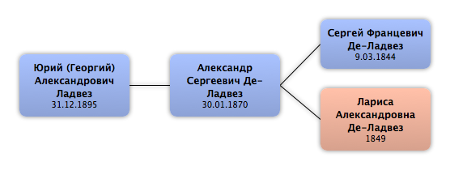

Домой
Домой
 Люди
Люди
 Семьи
Семьи
 Источники
Источники
 Диаграммы
Диаграммы
 Статистика
Статистика
Юрий (Георгий) Александрович Ладвез

Контекст

Родители
| Отец | Дата рождения | Мать | Дата рождения |
|---|---|---|---|
|
Александр Сергеевич Де-Ладвез
|
30.01.1870 |
Родители и дети
| Партнёры | Дата рождения | Дети |
|---|
События
| Тип события | Дата | Место | Описание |
|---|---|---|---|
| Рождение | 31.12.1895 | г. Сороки Бессарабской губернии, Россия | |
| Место проживания | 1902 | Вышний Волочек, Россия | Переезд |
| Окончание учебного заведения | 1913 | Вышний Волочек, Россия | Реальное училище |
| Профессия | 1914 | Гатчинская школа лётчиков | |
| Военная служба | 1917 | Порутчик, вольноопределяющийся Кавказской армии. | |
| Военная служба | 1917 | Вступил в белую армию | |
| Эмиграция | 1920 | Чехословакия | |
| Иммиграция | 1924 | Вышний Волочек, Россия | Возвращение на Родину |
| Другое событие | 1925 | Арест | |
| Другое событие | 1925 | Соловки, СССР | Ссылка |
| Другое событие | 1931 | Женился | |
| Окончание учебного заведения | 1931 | Закончил образование и стал инженером путей сообщения | |
| Другое событие | 14.06.1937 | Орск, СССР | Арестован |
| Другое событие | 07.06.1962 | Москва, СССР | Реабилитирован |
| Смерть | 27.10.1937 | Оренб. обл, СССР | Расстрел |
Факты
Медиа
Примечание
Ладвез Юрий Александрович: 1895 года рождения;
инженер "Орскхалилстрой";
место проживания: г. Орек
Осужд. 23.10.1937 тройка при УНКВД по Оренб. обл..
Реабилитиация 07.06.1962
Источник: Книга памяти Оренбургской обл.
инженер "Орскхалилстрой";
место проживания: г. Орек
Осужд. 23.10.1937 тройка при УНКВД по Оренб. обл..
Реабилитиация 07.06.1962
Источник: Книга памяти Оренбургской обл.
Рассказ Ю.А.Ладвеза о своем деде. (в сокращении - Ф.Р)
О Ладвезе Юрии Александровиче.
Первым из Де-Ладвезов в Российской империи появился капитан службы французского короля Людовика четырнадцатого Франсуа – Бернард Де-Ладвез Варфоломеев сын, родившийся во Франции в 1756 году, по вероисповеданию римский католик. В 1802 году он принял присягу на подданство России. От его рода идёт и линия Де –Ладвезов, в которой появился Ладвез (Де-Ладвез) Юрий Александрович.
Родился Ю.А. Ладвез (Де-Ладвез) в г. Сороки Бессарабской губернии 31.12.1895 года. Отцом его был подпоручик 94-го Енисейского полка Александр Сергеевич Де-Ладвез, матерью – Валентина Александровна Юренева, дочь коллежского асессора. Оба из обедневших дворянских семей.
В 1902 году мать Ю.А. Ладвеза умерла. Юрий Де-Ладвез и его младший брат Сергей Де-Ладвез оказался в Вышнем Волочке у родителей матери, где и воспитывался до 1913 года, до окончания реального училища.
После окончания реального училища Юрий Де-Ладвез в 19 неполных лет поступил в Гатчинскую школу лётчиков, потом стал вольноопределяющимся Кавказской армии.
К 1917 году он стал поручиком. Затем, после эвакуации Закавказской армии, его группу отправили в Англию (через Мурманск на крейсере «Варяг») для усовершенствования в авиации. Затем он успел поучаствовать в военных действиях в Галиции.
После революции 1917 года в 22 года он вступил в белую армию.
После разгрома белой армии дед эвакуировался из Крыма на миноносце «Живой», который при переходе затонул у турецкого берега, но дед был спасён английскими и турецкими моряками и оказался в Константинополе.
Затем Ю. Де-Ладвез перебрался в Чехословакию. В 1923 году закончил образование и стал инженером путей сообщения.
Каким-то образом (или путём получения визы, или просто где-то перешёл границу) в 1924 году он оказался в СССР, в Вышнем Волочке, а в 1925 году (или в конце 1924 года) был арестован, особым совещанием осуждён за шпионаж в пользу иностранного государства на 3 года и отправлен для отбывания наказания в Соловецкие лагеря (СЛОН).
В 1931 году Юрий Александрович Ладвез (Де-Ладвез) женился. В том же 1931 году Ю. Ладвез был зачислен в штат управления Уралдортранса, работал в научно-исследовательском институте Облдортранса, изучал состояние дорожной сети региона, но работой был не доволен. В 1932 году у него родился сын Андрей (мой отец).
15.06. 1932 года дед был назначен главным инженером и первым помощником начальника Уралдорстроя. При этом его не миновали проблемы с выдачей паспорта, в связи с чем пришлось покинуть Свердловск.
В 1933 году дед в качестве какого-то начальника оказался в Ревде Свердловской области в «Уралцветметзолото», а затем по контракту в «Средуралмедьстрое» (СУМС).
20.10.1933 года ему выдали паспорт (обычно задержки с выдачей паспортов были связаны с выявлением чуждых элементов и их невыдача грозила необходимостью покинуть крупные города).
Уже в 1934 году в газетной заметке в местной газете обиженный дедом (уволенный за служебное несоответствие) коммунист бездельник-прораб обвиняет деда в переделке планов дорожного строительства, в его удорожании и называет вредителем. Дед бескомпромиссен, увольняет безграмотных и ленивых, в том числе коммунистов, которые затем ему мстят.
В 1935 году Ю. Ладвез ушёл из СУМСа по собственному желанию, потому что, по его выражению, слишком стали учитывать его положение бывшего белого офицера.
В феврале 1936 года Ю.А.Ладвез назначен техническим руководителем железнодорожного и автогужевого строительства и земляными работами площадки ТЭЦ в г. Орске Оренбургской области, а затем был переведён на Никельстрой и назначен главным инженером Желдорстроя там же.
14.06.1937 года Ю.А.Ладвез арестован. Он был включён в состав комиссии по определению годности к эксплуатации результатов произведённых на строительстве работ (приёмной комиссии) и дал отрицательное заключение. После этого был вызван в Оренбург, а по возвращении арестован.
27.10.1937 года Юрий Александрович Ладвез (Де-Ладвез) был расстрелян в Оренбурге.
О Ладвезе Юрии Александровиче.
Первым из Де-Ладвезов в Российской империи появился капитан службы французского короля Людовика четырнадцатого Франсуа – Бернард Де-Ладвез Варфоломеев сын, родившийся во Франции в 1756 году, по вероисповеданию римский католик. В 1802 году он принял присягу на подданство России. От его рода идёт и линия Де –Ладвезов, в которой появился Ладвез (Де-Ладвез) Юрий Александрович.
Родился Ю.А. Ладвез (Де-Ладвез) в г. Сороки Бессарабской губернии 31.12.1895 года. Отцом его был подпоручик 94-го Енисейского полка Александр Сергеевич Де-Ладвез, матерью – Валентина Александровна Юренева, дочь коллежского асессора. Оба из обедневших дворянских семей.
В 1902 году мать Ю.А. Ладвеза умерла. Юрий Де-Ладвез и его младший брат Сергей Де-Ладвез оказался в Вышнем Волочке у родителей матери, где и воспитывался до 1913 года, до окончания реального училища.
После окончания реального училища Юрий Де-Ладвез в 19 неполных лет поступил в Гатчинскую школу лётчиков, потом стал вольноопределяющимся Кавказской армии.
К 1917 году он стал поручиком. Затем, после эвакуации Закавказской армии, его группу отправили в Англию (через Мурманск на крейсере «Варяг») для усовершенствования в авиации. Затем он успел поучаствовать в военных действиях в Галиции.
После революции 1917 года в 22 года он вступил в белую армию.
После разгрома белой армии дед эвакуировался из Крыма на миноносце «Живой», который при переходе затонул у турецкого берега, но дед был спасён английскими и турецкими моряками и оказался в Константинополе.
Затем Ю. Де-Ладвез перебрался в Чехословакию. В 1923 году закончил образование и стал инженером путей сообщения.
Каким-то образом (или путём получения визы, или просто где-то перешёл границу) в 1924 году он оказался в СССР, в Вышнем Волочке, а в 1925 году (или в конце 1924 года) был арестован, особым совещанием осуждён за шпионаж в пользу иностранного государства на 3 года и отправлен для отбывания наказания в Соловецкие лагеря (СЛОН).
В 1931 году Юрий Александрович Ладвез (Де-Ладвез) женился. В том же 1931 году Ю. Ладвез был зачислен в штат управления Уралдортранса, работал в научно-исследовательском институте Облдортранса, изучал состояние дорожной сети региона, но работой был не доволен. В 1932 году у него родился сын Андрей (мой отец).
15.06. 1932 года дед был назначен главным инженером и первым помощником начальника Уралдорстроя. При этом его не миновали проблемы с выдачей паспорта, в связи с чем пришлось покинуть Свердловск.
В 1933 году дед в качестве какого-то начальника оказался в Ревде Свердловской области в «Уралцветметзолото», а затем по контракту в «Средуралмедьстрое» (СУМС).
20.10.1933 года ему выдали паспорт (обычно задержки с выдачей паспортов были связаны с выявлением чуждых элементов и их невыдача грозила необходимостью покинуть крупные города).
Уже в 1934 году в газетной заметке в местной газете обиженный дедом (уволенный за служебное несоответствие) коммунист бездельник-прораб обвиняет деда в переделке планов дорожного строительства, в его удорожании и называет вредителем. Дед бескомпромиссен, увольняет безграмотных и ленивых, в том числе коммунистов, которые затем ему мстят.
В 1935 году Ю. Ладвез ушёл из СУМСа по собственному желанию, потому что, по его выражению, слишком стали учитывать его положение бывшего белого офицера.
В феврале 1936 года Ю.А.Ладвез назначен техническим руководителем железнодорожного и автогужевого строительства и земляными работами площадки ТЭЦ в г. Орске Оренбургской области, а затем был переведён на Никельстрой и назначен главным инженером Желдорстроя там же.
14.06.1937 года Ю.А.Ладвез арестован. Он был включён в состав комиссии по определению годности к эксплуатации результатов произведённых на строительстве работ (приёмной комиссии) и дал отрицательное заключение. После этого был вызван в Оренбург, а по возвращении арестован.
27.10.1937 года Юрий Александрович Ладвез (Де-Ладвез) был расстрелян в Оренбурге.
Источники
Родство
| Имя | Степень родства | Дата рождения | Место рождения | Дата смерти | Место смерти |
|---|---|---|---|---|---|
| Братья и сёстры | |||||
| Брат | 16.07.1900 | ||||
| Родителей | |||||
| Отец | 30.01.1870 | ||||
| Дедушки и бабушки | |||||
| Дедушка | 9.03.1844 | 23.09.1887 | |||
| Бабушка | 1849 | 14.04.1906 | |||
| Прадедушка и прабабушка | |||||
| Прабабушка | |||||
| Прадедушка | 9.7.1813 | ||||
| Пра-прадедушка и пра-прабабушка | |||||
| Пра-прадедушка | 24.12.1756 | Франция | 2.09.1846 | Москва, Россия | |
| Пра-прабабушка | 6.04.1784 | 3.02.1845 | Москва, Россия | ||
| Пра-пра-прадедушка и пра-пра-прабабушка | |||||
| Пра-пра-прадедушка | |||||
| Тёти и дяди | |||||
| Дядя | 19.11.1871 | Москва, Россия | 25.04.1921 | Челябинск, Россия | |
| Двоюродные дедушки и двоюродные бабушки | |||||
| Двоюродная бабушка | 24.07.1845 | ||||
| Двоюродная бабушка | 2.09.1846 | ||||
| Двоюродная бабушка | 27.09.1849 | ||||
| Двоюродный дедушка | 28.09.1849 | Москва, Россия | |||
| Двоюродные прадедушки и двоюродные прабабушки | |||||
| Двоюродный прадедушка | 14.10.1807 | Москва, Россия | 26.06.1857 | Москва, Россия | |
| Двоюродный прадедушка | 1812 | Москва, Россия | 1850 | Рязань, Россия | |
| Двоюродный прадедушка | 18.09.1817 | Москва, Россия | 29.10.1854 | Санкт-Петербург, Россия | |
| Тёти и дяди жены(мужа) | |||||
| Тётя (по браку) | |||||
| Двоюродные братья и сёстры | |||||
| Двоюродный брат | 18.06.1900 | ||||
| Двоюродный брат | 1901 | ||||
| Двоюродная сестра | 1905 | ||||
| Дальние родственники | |||||
| Четвероюродная сестра | 23.10.1899 | Москва, Россия | |||
| Четвероюродный брат | 21.07.1900 | Москва, Россия | 1947 | ||
| Четвероюродная сестра | 22.09.1902 | Тифлис (Тбилиси), Грузия | |||
| Четвероюродная сестра | 03.12.1905 | Москва, Россия | |||
| Четвероюродная сестра | 10.04.1907 | Двинск, Россия | |||
| Четвероюродная сестра | 16.02.1910 | Санкт-Петербург, Россия | |||
| Четвероюродная сестра | 23.03.1911 | Москва, Россия | |||
| Четвероюродный брат | 10.05.1912 | Москва, Россия | |||
| Другие родственники | |||||
| Четвероюродный племянник | |||||
| Троюродная тётя | |||||
| Четвероюродная племянница | |||||
| Троюродная тётя | |||||
| Четвероюродный внучатый племянник | |||||
| Четвероюродный племянник | |||||
| Четвероюродный внучатый племянник | |||||
| Четвероюродная племянница | |||||
| Четвероюродная племянница | |||||
| Троюродный дедушка | 2.01.1847 | Москва, Россия | |||
| Троюродный дядя | 23.09.1880 | ||||
| Троюродный дядя | 23.2.1888 | Москва, Россия | 05.08.1929 | Москва, СССР | |
| Четвероюродный племянник | 22.08.1926 | Хабаровск, СССР | 08.05.2006 | Санкт-Петербург, Россия | |
| Четвероюродная внучатая племянница | 19.03.1963 | Ленинград, СССР | |||
| Четвероюродный внучатый племянник | 22.02.1965 | Ленинград, СССР | |||